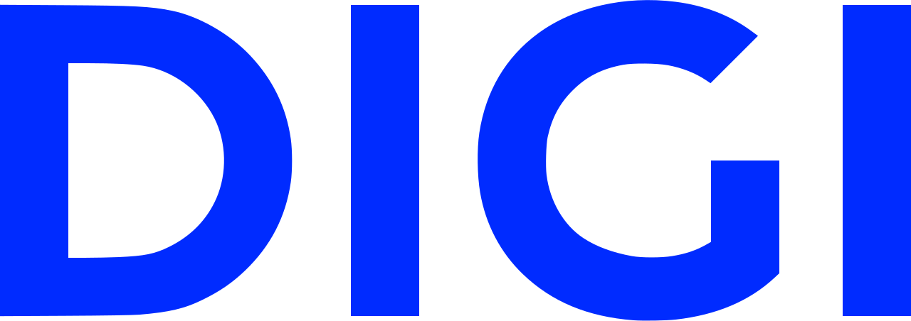
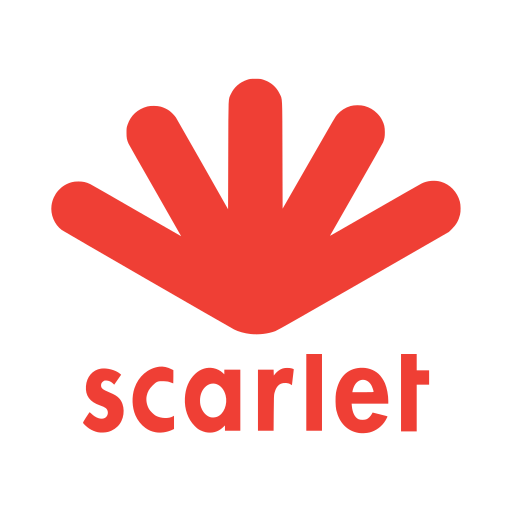
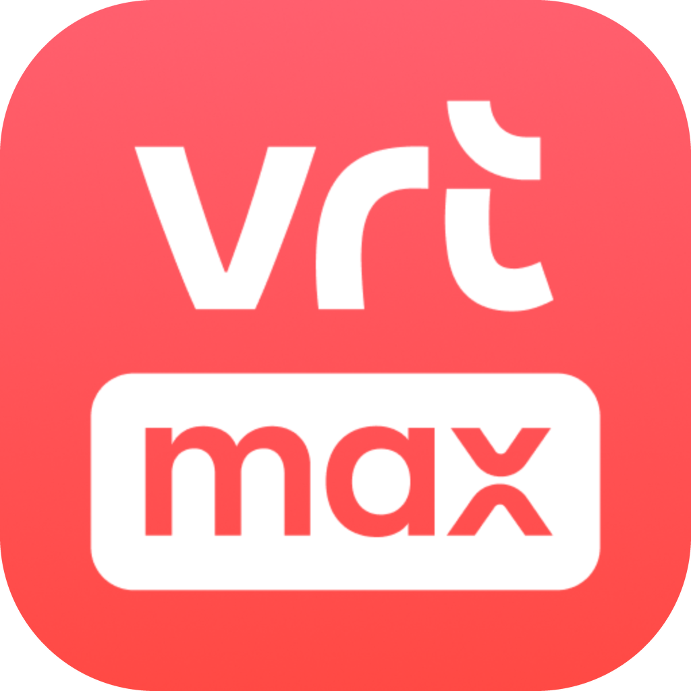
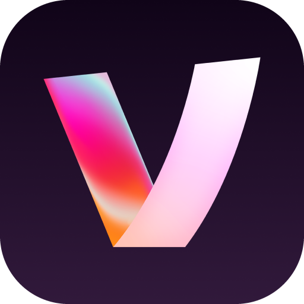
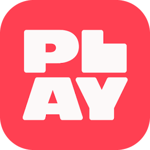
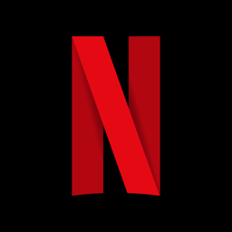

gsm-abonnenement, internet en streaming
Veel mensen betalen jaar na jaar te veel voor bellen, sms'en, internet, tv en streaming, simpelweg omdat ze nooit vergelijken of hun pakket nooit opnieuw bekijken. Overstappen of slimmer combineren is makkelijker dan het lijkt.
Vergelijk met Bestetarief.be
Bestetarief.be is de officiële, gratis vergelijkingstool van het BIPT (de telecomwaakhond). Je geeft je gebruik in (bellen, data, internet, tv) en ziet welk tariefplan het best bij je past, bij alle operatoren. Bestetarief vergelijkt de actuele tarieven. Volgens het BIPT kan je door je mobiele tariefplan te vergelijken al snel tot € 120 per jaar besparen, en voor een gezin met meerdere abonnementen loopt dat verder op.
Gsm-abonnement
Bij gsm-abonnementen is het verschil tussen de bekende, traditionele providers en de zogenaamde prijsbrekers vaak groot. Voor vergelijkbaar bel- en datagebruik betaal je bij een prijsbreker doorgaans een flink stuk minder per maand, zonder dat je veel hoeft in te leveren. Bij een overstap mag je bovendien altijd je huidig telefoonnummer gratis behouden.
| Traditionele providers | Prijsbrekers |
|---|---|
Proximus Telenet |  DigiHey Telecom |
| € 20–25 per maand | € 5–10 per maand |
Indicatieve prijzen, situatie juni 2026. Tarieven en aanbieders wijzigen voortdurend, controleer dus altijd de actuele prijs.
Vast internet
Ook voor vast internet betaal je bij de bekende, traditionele providers vaak meer dan nodig. Een prijsbreker als Scarlet biedt een volwaardig internetabonnement voor een vaste, lagere prijs. Er bestaan nog goedkopere internetabonnementen, maar die beperken je dan wel sterk in snelheid of surfvolume.
| Traditionele providers | Prijsbrekers |
|---|---|
Proximus Telenet |  Scarlet |
| € 40–55 per maand | € 23–34 per maand |
Indicatieve prijzen, situatie juni 2026. Tarieven en aanbieders wijzigen voortdurend, controleer dus altijd de actuele prijs.
Tv
Klassiek tv-kijken gebeurt via een tv-decoder van je provider, met een vast bedrag per maand. Steeds meer mensen kijken echter via internet, met de gratis apps op hun (smart-)tv: VRT MAX, VTM GO en Play. Heb je geen smart-tv? Met een Chromecast van Google stream je die apps alsnog eenvoudig naar je televisie.
| Via tv-decoder | Kijken via internet |
|---|---|
Proximus Telenet |  VRT MAX VTM GO Play |
| € 10–15 per maand | Gratis |
Indicatieve prijzen, situatie juni 2026. Tarieven en aanbieders wijzigen voortdurend, controleer dus altijd de actuele prijs.
Streamingdiensten
De grote streamingdiensten hebben naast hun standaardabonnement (zonder reclame) bijna allemaal een goedkoper abonnement mét reclame. De inhoud blijft dezelfde, je krijgt er enkel reclame bij. Wie daarmee kan leven, bespaart al snel 30 tot 50% per maand op het abonnement.
| Streamingdienst | Met reclame | Zonder reclame | Je bespaart |
|---|---|---|---|
 Netflix | € 8,99 | € 16,99 | € 8,00 /maand · 47% |
| Disney+ | € 5,99 | € 9,99 | € 4,00 /maand · 40% |
| HBO Max | € 5,99 | € 9,99 | € 4,00 /maand · 40% |
| Prime Video | inbegrepen bij Prime | + € 2,99 reclamevrij | € 2,99 /maand · toeslag |
Indicatieve prijzen, situatie juni 2026. Tarieven en aanbieders wijzigen voortdurend, controleer dus altijd de actuele prijs.
Overstappen zonder gedoe
- Breng je echte gebruik in kaart: hoeveel data, bellen en welke tv-zenders heb je nodig?
- Vergelijk via Bestetarief.be en kies het best passende plan.
- Je nummer behouden kan. De nieuwe operator regelt de overstap meestal voor jou.
- Problemen? De Ombudsdienst voor Telecommunicatie helpt gratis.
Tv apart bekijken
Veel Vlaamse zenders zijn gratis online te bekijken. Ga na of je nog een dure decoder of tv-abonnement nodig hebt.
Officiële bronnen
- Bestetarief.be: telecom vergelijkenBIPT
- BIPT: klachten en rechten telecomBIPT
- Ombudsdienst voor TelecommunicatieOmbudsdienst Telecom
Besparingsbedragen zijn indicaties van het BIPT; je eigen winst hangt af van je huidige abonnement en gebruik.